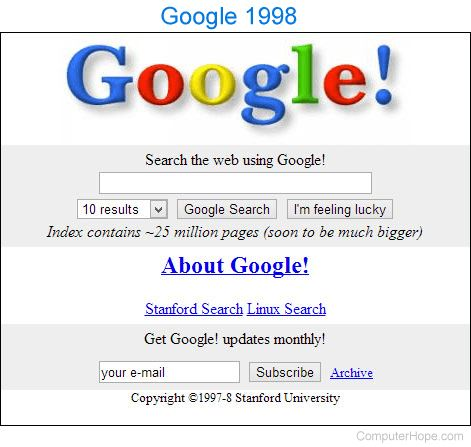

Patricia's uncle was excited to spend time with her and show her the amazing opportunities the world had to offer. He explained how determination, hard work and believing in yourself could help turn dreams into reality. He encouraged Patricia to set goals, take chances and never give up, even when things became difficult. He showed her that there were endless possibilities waiting for her if she was willing to put in the effort and chase what she truly wanted. By the end of their time together, Patricia realised that with the right mindset and determination, she could achieve great things.
| Restart | Finish |
